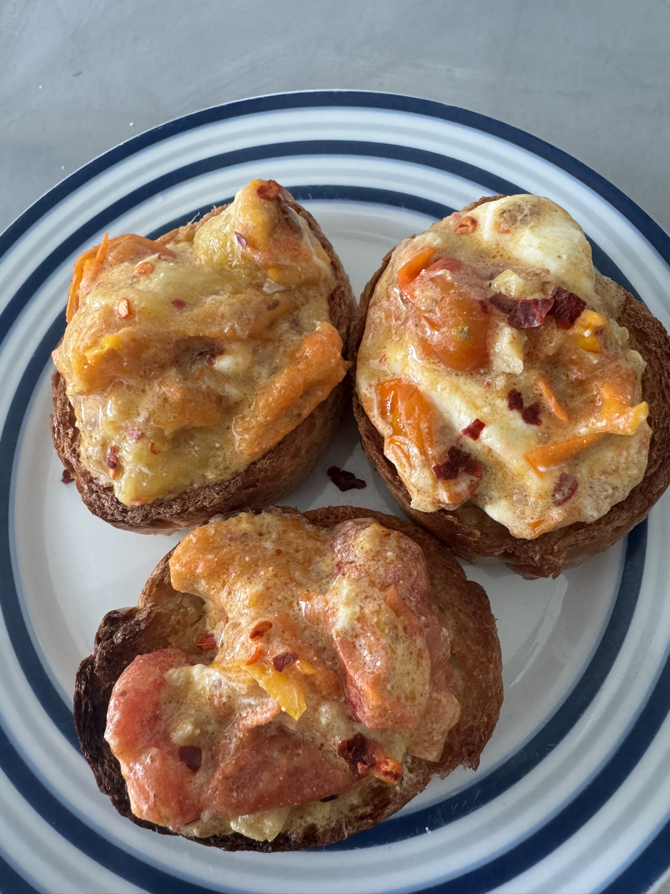
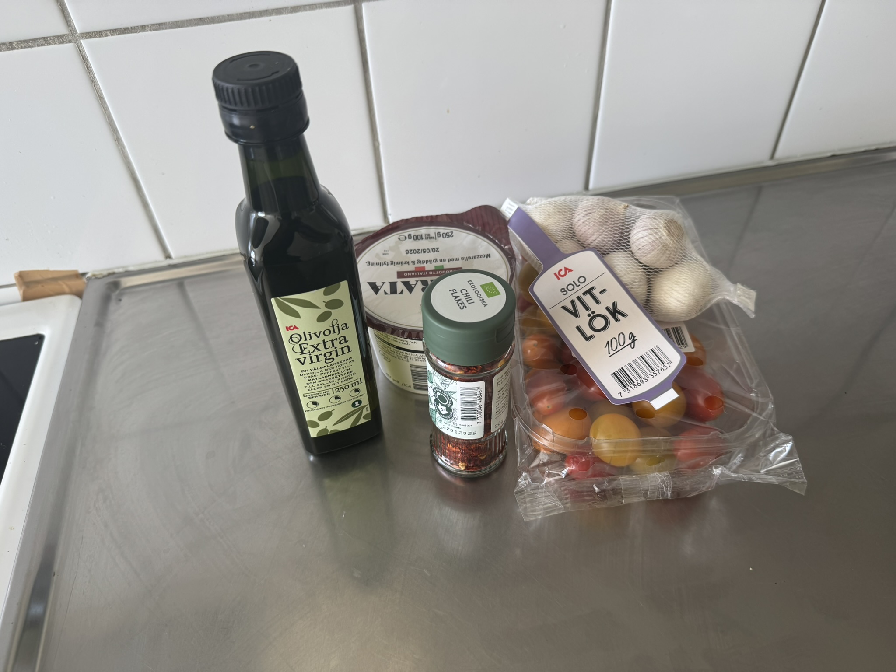
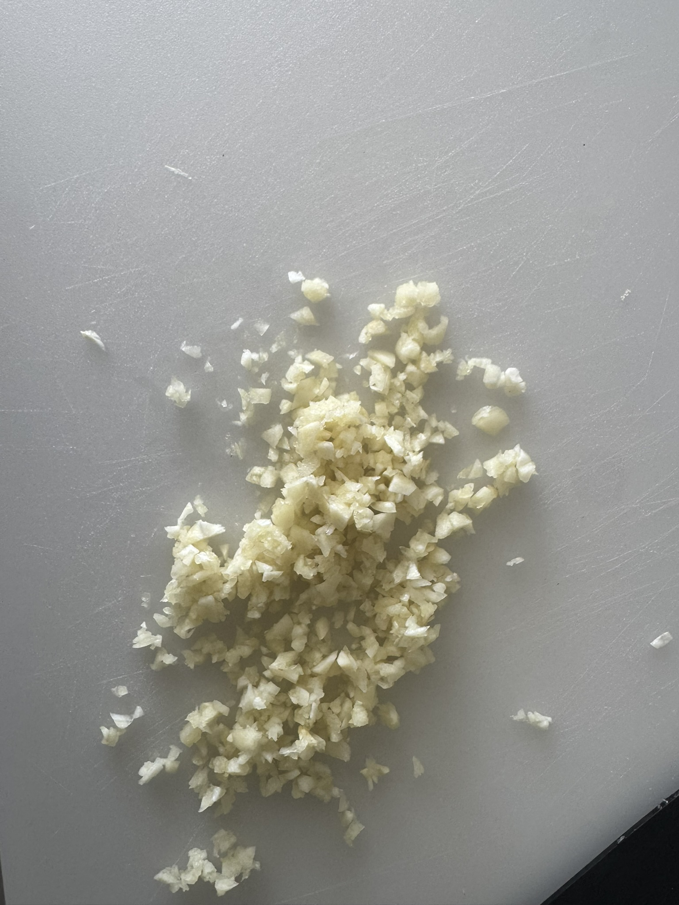
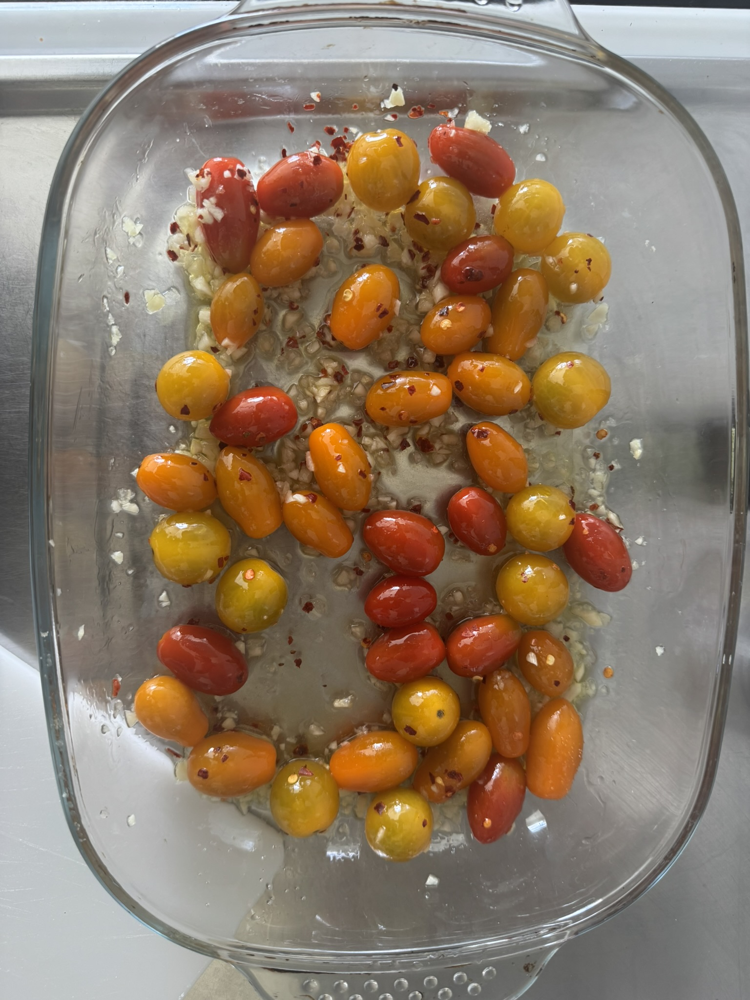
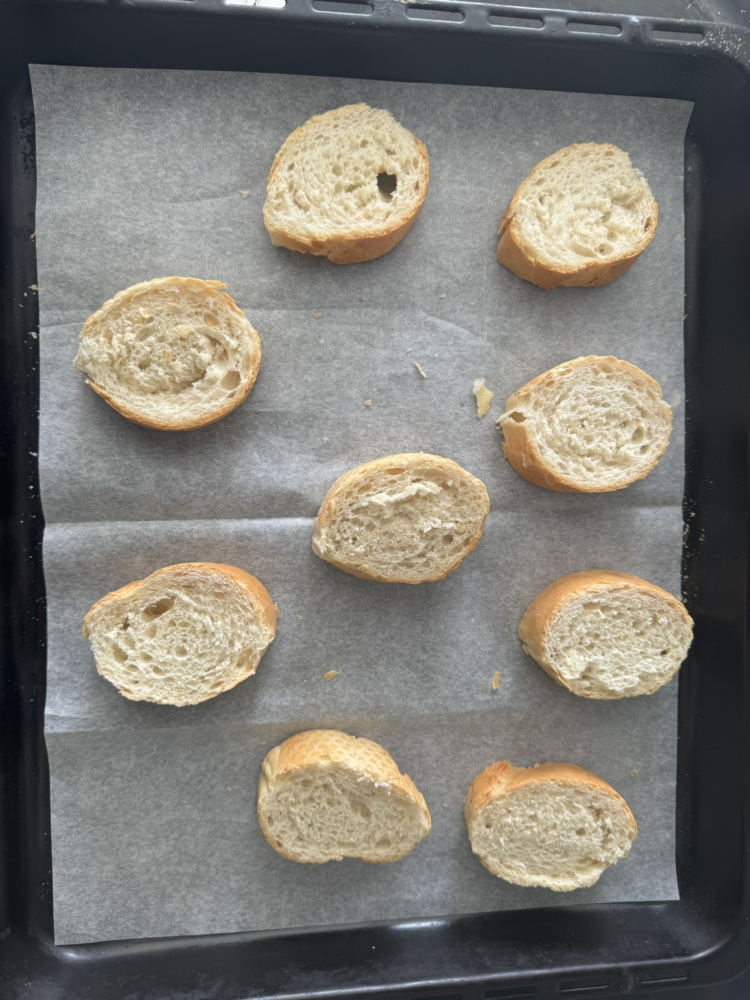
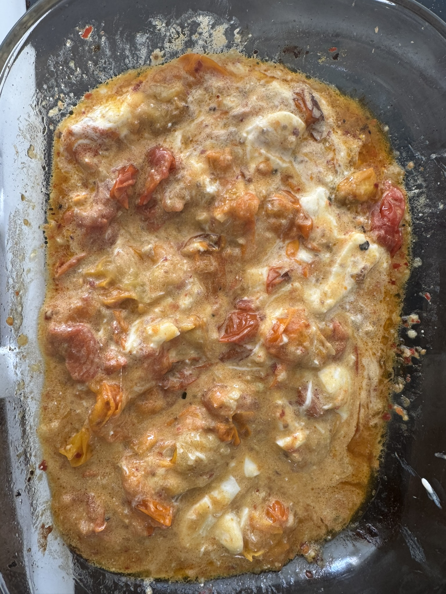

Burrata med ugnsstekt tomat
Ingredienser
- 1-2 burratabollar à 250g
- 500g cocktailtomater
- 80ml olivolja
- 3 vitlöksklyftor
- Färsk basilika
- Chiliflakes efter smak
- Havssalt och svartpeppar
- Balsamvinäger (valfritt)
Tillredning
- Förbered tomaterna: Tvätta och dela cocktailtomaterna. Lägg på ett bakplåt, ringla med olivolja och hackat vitlök.
- Ugnsste: Rosta tomaterna på 200°C i ca 25-30 minuter tills skalet spricka och de blir mjuka och kräkiga.
- Smaksätt: Ta ut från ugnen, vänd och smaksätt med salt, peppar och chiliflakes.
- Arrangera burratan: Lägg upp burratan på en tallrik eller serveringsfat.
- Skikta: Lägg de varma rostade tomaterna runt eller över burratan.
- Avsluta: Ringla med extra olivolja, toppa med färsk basilika och en nypa chiliflakes. Servera omedelbar.
Tips från Ahmed
Använd burrata som är väl kyld innan servering för bäst kontrast mot de varma tomaterna. Servera genast efter assemblering för maximal smak och textur!
Bilder från burrata-tillredningen





